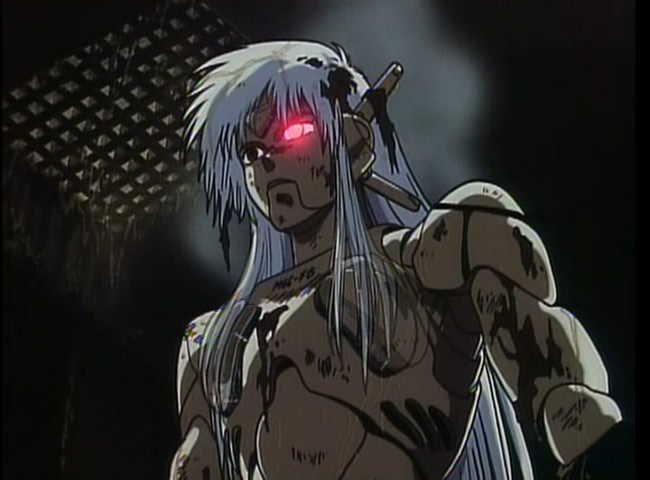
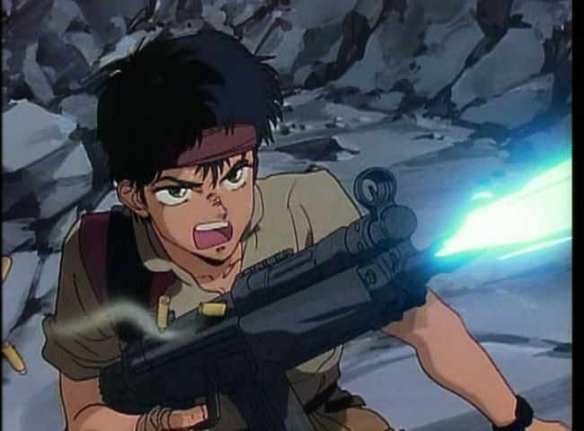
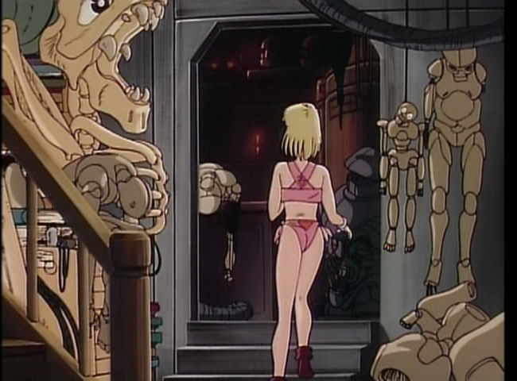
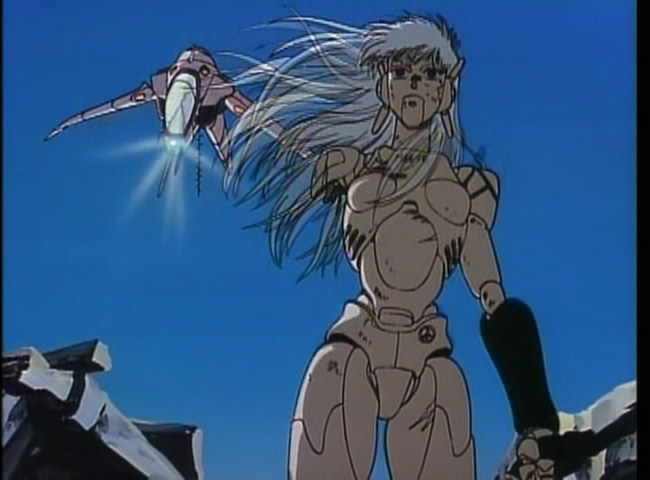

Movie review by : SFAM
Year : 1987
Directed by : Masamune Shirow
Written by : Masamune Shirow
Degree of Cyberpunk visuals : Medium
Correlation to Cyberpunk themes : Medium
Rating : 7/10
Key cast members :

Overview: Masume Shirow's Black Magic M-66 is one of the best Terminator anime clones. Most know Masume Shirow from his Appleseed and Ghost in the Shell mangas, not to mention his myriad of other hot chicks kicking butt artwork (Intron Depot Ballistics is my favorite). Black Magic M-66 is his first anime. The visuals, while quality, are definitely 80s cartoon style.

In this "When Good Fembots Go Bad" tale, a tough and sexy journalist who likes to hang out in the buff picks up a military transmission on her scanner about an escaped weapon system. In her haste to get the story, she almost forgets to put on clothes, but finally comes back for a pair of pants. She eventually tracks the military to the woods and finds them besieged by an android weapon accidentally "turned on" after a horrible cargo plane crash.

This android chick is ultra-tough, nearly unstoppable, and, due to it running on laboratory test data, apparently has been programmed to kill the inventor's daughter. The reporter figures this out tries to rescue the android inventor's daughter, but the M-66 is hot on her heels. All hell breaks lose in this anime, which is essentially a Terminator-style chase from beginning to end.
If you're a cyber-studies researcher in need of a good example of cyberpunk's propensity for objectification of women, Black Magic M-66 is your movie! You get a bevy of good stereotypes here, including the tougher than tough, smarter than smart, ultra-hot reporter who doesn't like to wear clothes, the needy and continually fainting daughter always in need of rescue, and of course the M-66 weapon system - made in a woman's image for God knows what reason (other than the obvious, of course). Again, this movie doesn't bother you with needless philosophies that might confuse things - its all visual.

The Bottom Line: Black Magic M-66 does not have in-depth philosophical questions - its not that type of cyberpunk anime. This is an action-fest from the get-go. It doesn't bother giving you lots of in-depth set-up or character rationales. The action is good though, and the pacing is consistently fast and tense, and generally goes fast enough for you to ignore plot holes and bizarre side questions like why was the inventor's daughter in the target the "test" data. The anime is still 80s style, especially in the backgrounds, but Shirow always does fine quality products.